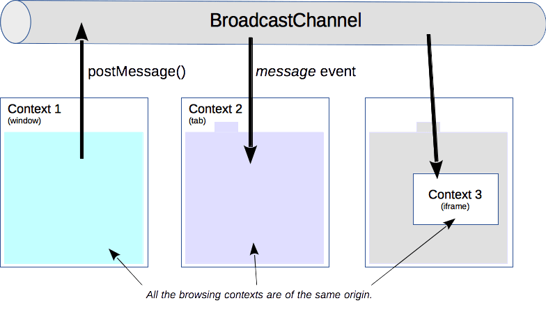

{{DefaultAPISidebar("Broadcast Channel API")}}
The Broadcast Channel API allows basic communication between {{glossary("browsing context", "browsing contexts")}} (that is, windows, tabs, frames, or iframes) and workers on the same {{glossary("origin")}}.
{{AvailableInWorkers}}
By creating a {{domxref("BroadcastChannel")}} object, you can receive any messages that are posted to it. You don't have to maintain a reference to the frames or workers you wish to communicate with: they can “subscribe” to a particular channel by constructing their own {{domxref("BroadcastChannel")}} with the same name, and have bi-directional communication between all of them.

A client joins a broadcast channel by creating a {{domxref("BroadcastChannel")}} object. Its constructor takes one single parameter: the name of the channel. If it is the first to connect to that broadcast channel name, the underlying channel is created.
// Connection to a broadcast channel
const bc = new BroadcastChannel('test_channel');
It is enough to call the {{domxref("BroadcastChannel.postMessage", "postMessage()")}} method on the created BroadcastChannel object, which takes any object as an argument. An example string message:
// Example of sending of a very simple message
bc.postMessage('This is a test message.');
Any kind of object can be sent, not just a {{domxref("DOMString")}}.
The API doesn't associate any semantics to messages, so it is up to the code to know what kind of messages to expect and what to do with them.
When a message is posted, a {{event("message")}} event is dispatched to each {{domxref("BroadcastChannel")}} object connected to this channel. A function can be run for this event with the {{domxref("BroadcastChannel.onmessage", "onmessage")}} event handler:
// A handler that only logs the event to the console:
bc.onmessage = function (ev) { console.log(ev); }
To leave a channel, call the {{domxref("BroadcastChannel.close", "close()")}} method on the object. This disconnects the object from the underlying channel, allowing garbage collection.
// Disconnect the channel bc.close();
The Broadcast Channel API's self-contained interface allows cross-context communication. It can be used to detect user actions in other tabs within a same origin, like when the user logs in or out.
The messaging protocol is not defined and the different browsing contexts need to implement it themselves; there is no negotiation nor requirement from the specification.
| Specification | Status | Comment |
|---|---|---|
| {{SpecName('HTML WHATWG', "comms.html#broadcasting-to-other-browsing-contexts", "The Broadcast Channel API")}} | {{Spec2('HTML WHATWG')}} | Initial definition. |
{{Compat("api.BroadcastChannel")}}